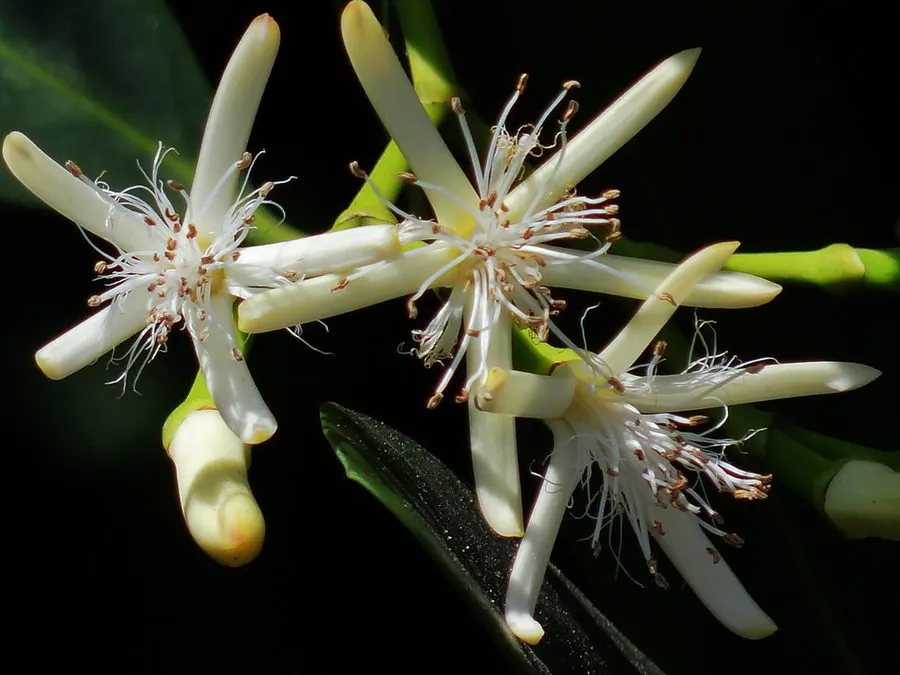

乔木 · 植物界
秋茄 Kandelia obovata

中国南方海岸红树林的代表树种，树干基部生有拱形支柱根，果实成熟后直接在母树上发芽，形成“胎生苗”。
- 分类
- 门被子植物门纲木兰纲目金虎尾目科红树科属秋茄属
- 栖息环境
- 热带亚热带海岸潮间带淤泥滩涂，耐盐耐淹，适应每日潮汐
- 地理分布
- 中国广东、广西、福建、海南、浙江沿海及日本南部、东南亚
- 保护级别
- 暂无评估；中国红树林受法律保护，禁止随意采伐
物种志
秋茄为常绿灌木或小乔木，高可达 8 m，树皮灰褐色；最显著的特征是树干基部长出密集的拱形支柱根，扎入滩涂淤泥中固着植株。叶片对生，革质，椭圆形，长 5–10 cm，上面深绿、下面淡绿。花序为聚伞花序，生于叶腋，花白色、5 裂；果实长圆锥形，成熟后不脱落，种子在母树上发芽长出胚轴，形成细长的“胎生苗”，落入淤泥后即可扎根。
秋茄分布于中国广东、广西、福建、海南、浙江及日本、东南亚的海岸潮间带，是红树林的主要组成树种，耐盐、耐淹，每天被潮水浸没仍能正常生长。密集的支柱根与胎生繁殖是适应潮间带环境的典型特征；红树林能防风消浪、护岸固滩，为鱼虾蟹与鸟类提供栖息地，被称为“海岸卫士”。树皮可提取鞣料，木材可制小器具，全株具有重要的生态价值。
形态与习性
- 株高可达 8 m，基部具拱形支柱根
- 花期5–6 月，花白色、5 裂
- 果期8–10 月，果实成熟后在树上发芽
- 光照喜光，不耐长期荫蔽
- 水分生长于潮间带，每日受海水浸泡
- 土壤淤泥质滩涂，耐盐
- 繁殖胎生苗随潮水传播，落地即扎根
趣味知识
- 秋茄的种子在母树上就发芽，长出细长的胚轴，落入滩涂后迅速扎根，被称为“胎生植物”。
- 红树林每天被海水浸泡两次，秋茄靠叶片排盐和支柱根呼吸适应这种环境。
- 秋茄的拱形支柱根插入淤泥，能稳住树身，也减缓潮水对海岸的冲刷。
- 中国现有红树林约 2.7 万公顷，是重要的海岸生态屏障。